Apsides — Perihelion, Aphelion, Perigee, Apogee
The two extreme points on every elliptical orbit: closest approach, and farthest.

101 · zoom in
Every elliptical orbit has a high point and a low point. That's all an apsis is — one of those two extremes. The closest approach to whatever you're orbiting; or the farthest. Spacecraft people obsess over these two spots because almost every important burn happens at one of them.
Why? Two reasons. First, your speed is at its extremes there too — fastest at the close end, slowest at the far end. The Oberth effect (which we'll get to in propulsion) says you get the most bang for your fuel when you burn fast — so departure burns happen near the close end. Second, raising or lowering the OPPOSITE side of an orbit is cheapest when you push at the extreme — so to raise your orbit you fire at the low point.
Annoying naming convention warning: every planet gets its own pair of words. Around the Sun: perihelion / aphelion. Around the Earth: perigee / apogee. Around the Moon: perilune / apolune. Same physics, just Greek roots glued to whichever body you're circling. Don't let it intimidate you — it's just one word for 'low' and one for 'high'.
An apsis is one of the two points on an elliptical orbit where the body is at minimum or maximum distance from its focus. The line connecting them — passing through both foci — is the line of apsides. Every Keplerian orbit has exactly two: closest, and farthest.
The names depend on what you're orbiting. Around the Sun: perihelion (closest) and aphelion (farthest), from Greek `peri` (near) and `apo` (far) plus `helios` (Sun). Around Earth: perigee and apogee. Around the Moon: periselene and aposelene, or perilune and apolune. Around any star: periastron and apastron. The ground truth is identical; only the suffix changes.
Apsides anchor mission timelines. The Voyager flybys were timed at perihelion of each planetary encounter. ISS reboost burns are scheduled at apogee, where they're cheapest. Rendezvous and docking phasing burns happen at perigee, where the orbital geometry concentrates the velocity change. The Sun's perihelion passage by Parker Solar Probe is the closest a human-made object has ever been to a star.
SEE IN THE APP
LEARN MORE
- intro Wikipedia · Apsis
- core NASA · Orbital Terminology